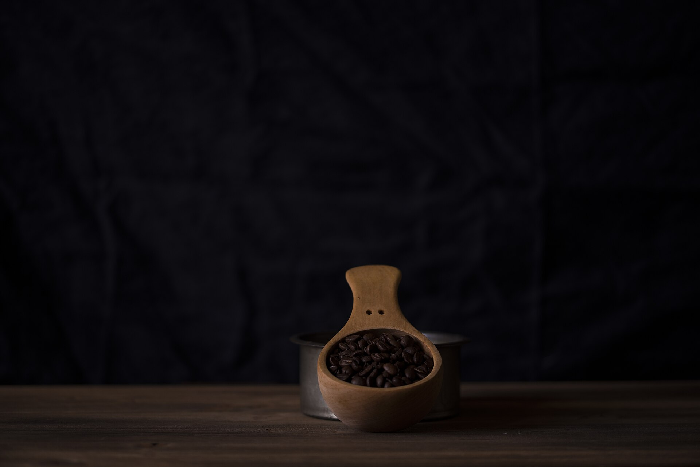

A07tubefinish first
Yirgacheffe
Ethiopia, washed
- remaining
- 138g of 250
- roast date
- 2026-09-04
- notes
- jasmine, lemon, black tea
Beantr teaches the agent you already use to keep a coffee ledger in Markdown: beans, gear, recipes, every brew.
curl -fsSL https://beantr.tiagomoraes.cloud/install | bash -s -- all
Installs for every agent it finds on this machine. Claude Code users can also add it as a plugin.

A07tubefinish first
Ethiopia, washed
B02bag, sealed
Colombia, natural
C11hopper
Brazil, pulped natural
Sample rows from beans/current.md. IDs stay stable, quantities are edited in place, and a fact the agent does not know is written as unknown, never guessed.
you, to your agent
It read beans/current.md and gear/current.md, filled in the bean and the grinder, and appended the entry to this month's log. Nothing was invented.
### 2026-09-20T07:41:12Z - Milky Cake / Espresso- Bean ID: dak-milky-cake-2026-09- Method: Espresso- Grinder: Lagom P64, setting 3.8- Dose: 18 g- Yield/water: 42 g- Ratio: 1:2.33- Temperature: 93 C- Brew time: 31 s- Sensory result: bright, aromatic, slightly sour finish- Score: 3.5/5- Next change: grind slightly finer
live state, edited in place
Beans and how much is left, gear in use, the recipe you would reach for today.
evidence, append-only
Every shot, every pour, every restock and correction. Kept forever, never rewritten.
distilled, only with evidence
Updated when recent sessions back it up. No generic theory, no guessing.
Agents use ordinary file tools. No HTTP calls, no MCP server, no database credentials, no account.
A current.md answers what is true now. The agent never replays history to find out.
History is evidence, not mutable state. Session and history files only ever grow.
Good advice points to recent sessions or stable preferences, never to generic theory.
No special UI required. Open any file, in any editor, at any time.